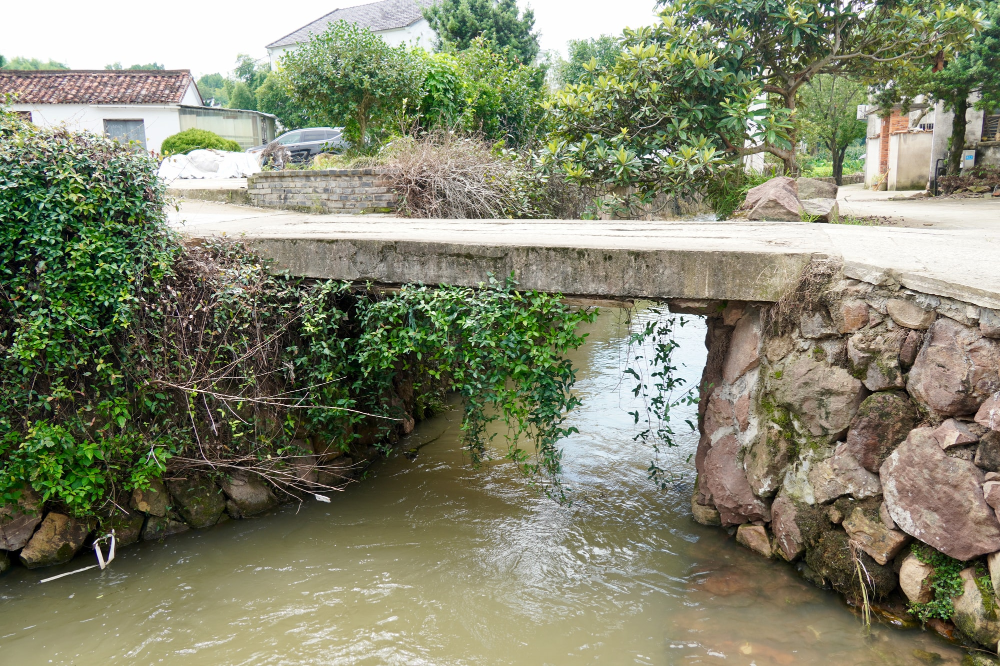

国保石桥
桥北是村，桥南是田万枝桥
万枝桥是全国重点文物保护单位“新叶村乡土建筑”的组成部分之一。它位于古村南缘，尺度虽小，却把新叶村依水而居、循水而耕的生活脉络浓缩在一座桥上。
01
村路尽头的一座桥
从村巷往南走，脚下的路面接上一段并排的窄石板，桥面低平，仅容少数人通过，几乎与两侧的村路齐平。桥旁是白墙民居和块石垒砌的驳岸，藤蔓从岸边垂落下来。若不留意脚下的水声，走过时未必会察觉自己正经过一座桥。
02
水系与农田的交界

桥下的水道汇集了村中内外两条溪流，穿过桥洞后向南流入农田。对新叶村来说，这里既是村落水系走到尽头的地方，也是农田灌溉开始的地方。人从桥面通行，水从桥下出村，两条路径在这里交叠而互不打断。